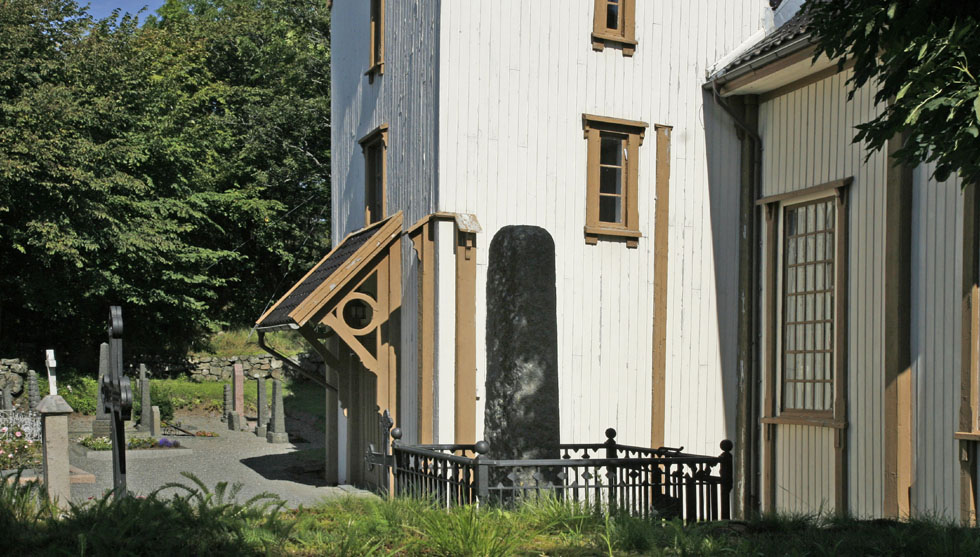
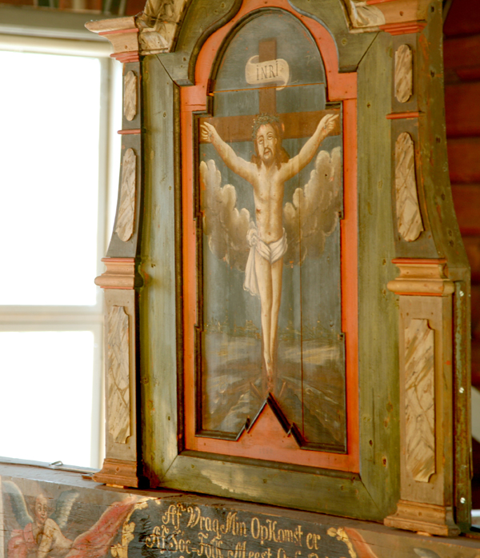
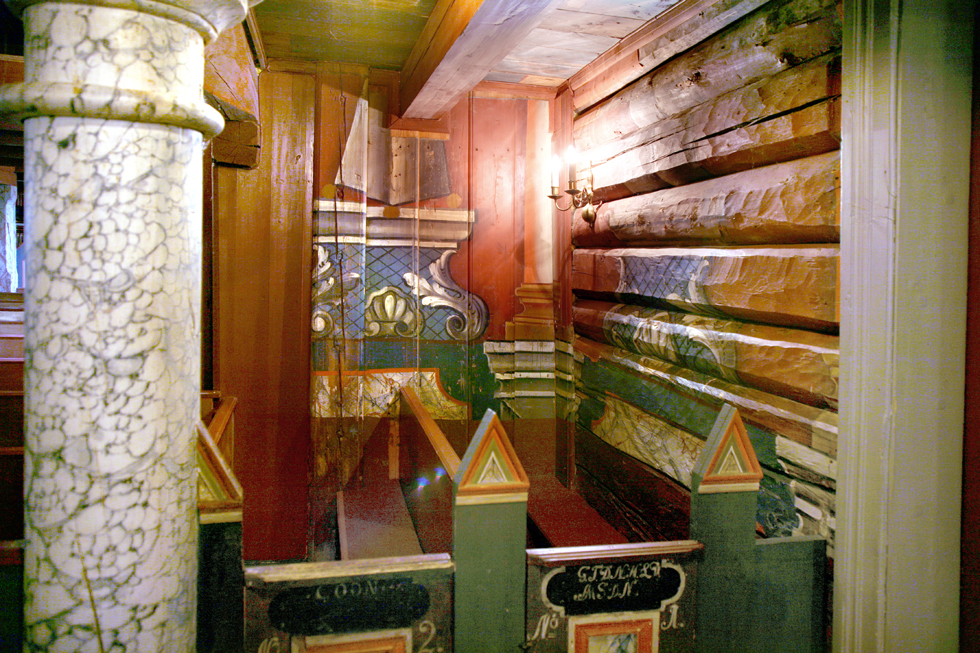
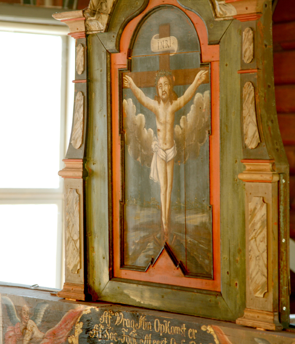
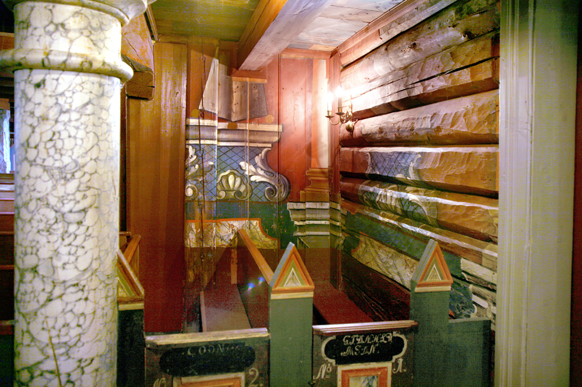
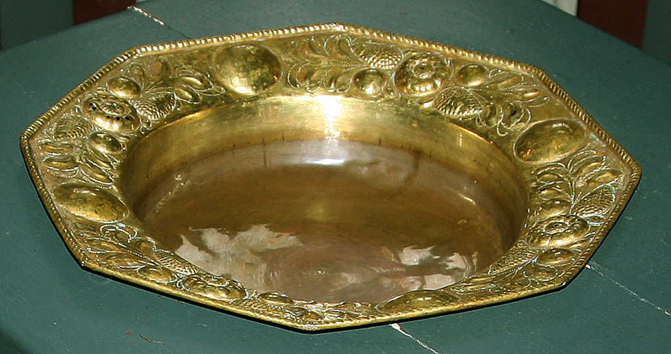
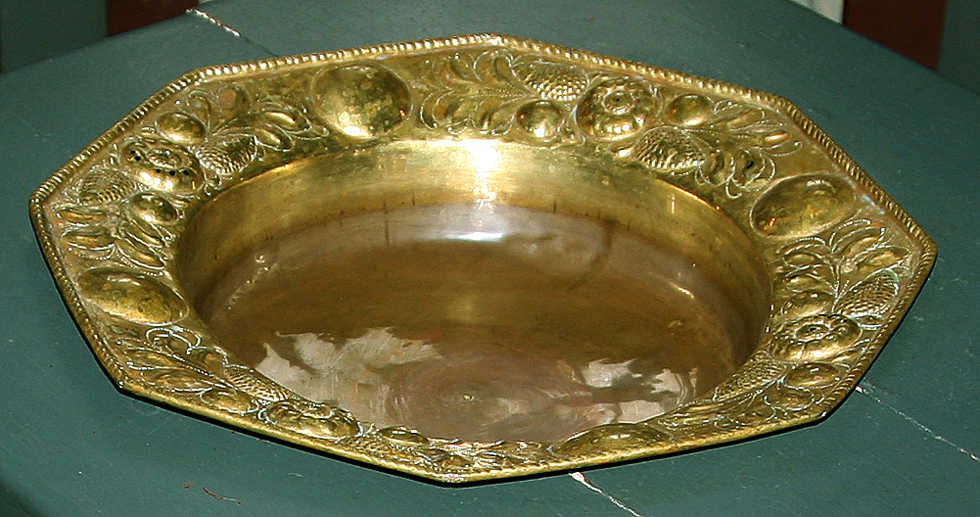

Flosta kirke
Foto: Torvald Slettebø, Universitetet i Agder, Seniorsenteret
Tekst: Bjarne Karsten Nenseter
Prestegjeld: Austre Moland
Prosti: Arendal
Kommune: Arendal
Innviet: 1467/1747
Flosta kirke kan føre sin historie tilbake til middelalderen. Den nevnes første gang i kjente kilder i 1467. I et dokument fra 1628 blir den nærmere beskrevet. Da var den så «brøstfeldig» at en ber lensstyrelsen avgjøre om den skal rives og sognet deles mellom nabosognene, eller om det skal bygges ny. En vet ikke sikkert om den ble revet. Men i 1632 ble det ifølge kirkens regnskaper utført betydelig arbeid på kirken. Et signet viser hvordan denne kirken så ut. Det var en langkirke med vinduer og dør mot syd. Den var uten tårn, men hadde kors og vindfløy på taket. Kirkeklokken er det eldste inventarstykket en har fra den gamle kirke. Den bærer årstallet 1506, og er laget av en kjent klokkestøper i Holland. Klokken er viet til St. Laurentius som var en populær helgen i Norden i middelalderen, han skulle spesielt verne mot ildebrann. Flosta kirke har vært truet av ildebrann 1739, 1824, 1980 og høsten 1988. Av annet inventar fra denne kirken, nevnes dåpsfatet fra 1600-tallet, lysestaker fra 1698, kirkeskip fra 1711, kalk og disk fra 1733 og lysekroner fra 1735. I 1735 fikk den lille kirken tårn. Det ble trukket med seilduk og tjæret.
I 1747 skjedde det store ting med den lille kirken. Da ble den ombygget til korskirke. Et tverrskip ble bygget til og ble nå hovedskip. Alteret ble flyttet til nordveggen. I korets hjørner ble det bygget skriftestol og degnestol. I krysset mot nordøst kom ny prekestol og rett overfor den et praktfullt dåpshus. Det er skåret av billedskjærer Christian Suchow som var kommet fra København til Nes jernverk der han skar ovnsmodeller. Dåpshuset lå lenge på kirkeloftet, men ble overført til Norsk Folkemuseum. I 1977 kom det på plass i kirken igjen.
Det store ombyggingsarbeide ble utført av Ole Nilsen Weierholt fra Austre Moland. Flosta kirke er den første i distriktet som ble ombygget til korskirke, og det er Ole Nilsen’s første store oppgave. Han har laget og skåret den vakre prekestolen, bygd korskillet og utført en rekke treskjærerarbeider. Kirken ble malt og dekorert av Jørgen H. Schultz, som her har utført et mesterlig arbeid. Veggene har fått en rød bunnfarge med malte obelisker og søyler. På korbjelken finner vi en tavle med en interessant inskripsjon som forteller noe om kirkens opphav:
Af Wrag Min Oppkomst er
Af Søe-Folk Meest Opholdet
Naar Søen Her og Der
Dem Sorrig har Forvoldet.
Kirken har altså vært en gavekirke - votivkirke - eller lovekirke som sjøfolk i gammel tid lovet gaver til om de ble berget når de var i havsnød. Kirkens to regnskapsbøker viser tydelig at den har mottatt gaver fra sjøfolk ned gjennom tidene. Det stemmer også med en innberetning fra 1742 som taler om et kapell i Holt som skal være opprettet ved gaver fra «Seglende i Fare af Skibbrud».
I 1864 ble kirken igjen forandret. Østre korsarm ble bygget bredere og større og kirken fikk nye vinduer og dører i sveitserstil. Det praktfulle interiør ble overmalt. 11882 fikk den ny altertavle i nygotikk, laget av Ludvig Karlsen, Saltrød. Det nye bildet er malt av maleren Brun, og skal være en kopi av alterbildet i Trefoldighetskirken i Oslo.
I 1976-77 ble kirken på ny restaurert og ominnredet. Nå fikk den tilbake det farverike og praktfulle interiør som den fikk etter ombyggingen i 1747. Tilbygget fra 1864 ble innredet til menighetssal. Den gamle praktfulle altertavle malt av Samuel Dorn i 1705 kom på plass, og kirkeskipet henger under taket. Dessverre ble den praktfulle altertavle en del skadet under en brann høsten 1988. Den er f .t. (1993) til restaurering hos Riksantikvaren. Et mesterlig og verdifullt restaureringsarbeide er utført etter riksantikvarens plan og med stor interesse og støtte fra lokalbefolkningen. Arbeidet ble ledet av restaureringskonsulent Odd Helland assistert av Sigrid E. Nilsen.
Etter den omfattende restaurering, ble kirken vigslet på ny 19.8.1977 av fung. biskop, domprost A. Thorbjørnsen assistert av menighetens prester.
Med kirkestuen som nabo i syd og det særpregede minnesmerke over falne fra de to verdenskriger mot vest, presenterer kirkeanlegget i Flosta seg som et av de vakreste langs Agderkysten
Teksten er hentet fra Bjarne Karsten Nenseters bok ”PÅ KIRKEVANDRING I AUST-AGDER”, som han utga i 1993, på grunnlag av sine artikler i Agderposten i 1950-årene, da han var prest i Aust-Agder. Vi gjengir her teksten med tillatelse fra Nenseters arvinger


 




 
